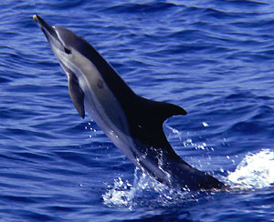
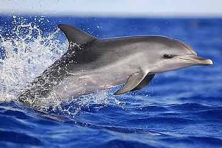
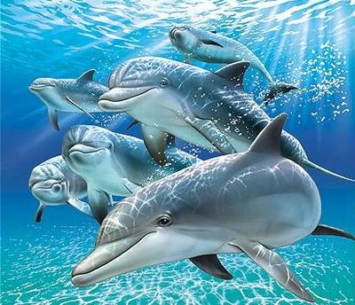
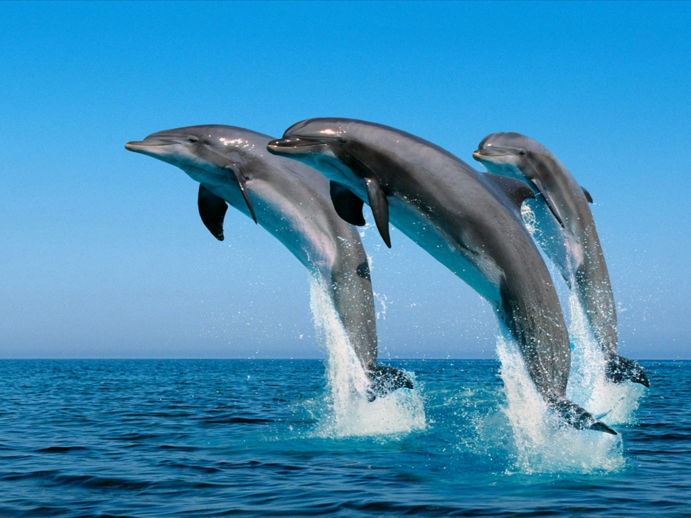
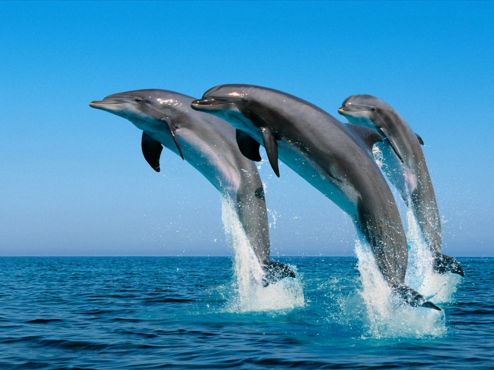

Delfín común:
Habita en los mares cálidos y templados de todo el mundo, mide unos dos metros y medio de longitud y tiene el pico de unos quince centímetros. A veces nada cerca de la costa y también mar adentro, les gusta saltar fuera del agua y al sumergirse casí no levantan espuma.

Los de morro de botella:
Alcanzan una longitud de más de treinta metros y medio, nadan en bancos o grupos por el Atlántico o el Pacífico.
Los de Ganges:Los de Ganges:
Han perdido casi el uso de sus ojos, probablemente a causa de que los rios en que viven, el Ganges y el Indo, llevan un agua tan turbia que la vista les presta poca utilidad. Estos delfines tantean el barro con sus largos hocicos para buscar crustáceos y peces. Lo mismo que los delfines del Amazonas, los de Gnages no abandonan jamás el agua dulce.

Los delfines de bandera blanca:
Viven únicamente en el gran lago Tung-Ting 1,000 kilómetros rio arriba del Yank-Tsé en China. Con casí dos metros y medio de largo y un peso de cerca de 120 kilogramos, estos delfines de color pálido se hallan muy lejos de su ambiente originario, el Océano. Casí ciegos, emplean sus largos y sensitivos picos para tentar el fondo del lago en busca de peces. Cuando se asoma fuera del agua su alta aleta dorsal sugiere la impresión de una bandera.

El delfín de Risso o Grampus:
Mide hasta cuatro metros y medio. Es animal del Océano y uno de los más grandes. Tiene la cabeza redonda, chata y carece de pico.
 
